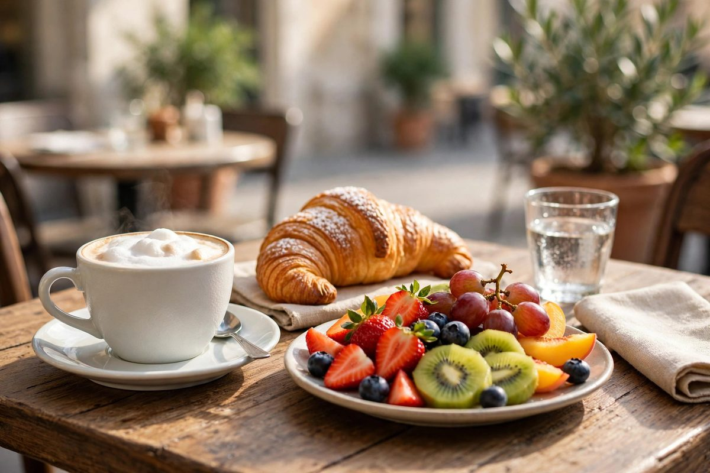

Home › Guides
Italian Breakfast: Coffee, Cornetto and a Slow Start

Italian breakfast is small, sweet, and fast. There is no cooked breakfast, no cereal bowl, and no big spread. There is coffee, standing at a bar, and a cornetto, a sweet croissant, eaten in a few bites. It is a light start that leaves room for lunch, which is the main meal of the day. Understanding Italian breakfast means understanding that less is more.
Coffee: the heart of breakfast
Coffee is the centre of Italian breakfast. An espresso is the default, drunk quickly, often standing at the bar. A cappuccino is a breakfast drink, made with steamed milk and a light foam, and it is rarely ordered after 11 in the morning, because milk is considered too heavy later in the day.
Order like an Italian: un caffe means an espresso. Un cappuccino means a cappuccino. If you want a longer coffee, ask for un caffe lungo. Coffee is cheap, fast, and social, and the bar is a place to exchange a few words before work.
Cornetto and sweet pastries
A cornetto is the Italian croissant, made with a softer, sweeter dough than a French croissant. It is usually filled with jam, custard, or chocolate, or eaten plain with a dusting of sugar. It is dunked in cappuccino by many Italians, which softens it and makes it even better.
Other breakfast pastries include bomboloni, which are fried doughnuts filled with custard or jam, and sfogliatelle, crisp pastry shells filled with sweet ricotta. All of them are sweet, small, and eaten with coffee, not as a meal on their own.
Breakfast at home
At home, Italian breakfast is even simpler: coffee and biscuits, or bread with jam. Fette biscottate, crisp rusks, are a common base for jam or honey. Yoghurt with fruit, or a piece of cake left from the day before, are also common.
There is no savoury breakfast in Italy, no eggs, bacon, or toast with butter. Breakfast is sweet and light, and it is over quickly. Children might have milk with biscuits, or bread with Nutella, which is an Italian invention.
Breakfast when travelling
If you are travelling in Italy, eat breakfast like a local. Go to a bar, order a cappuccino and a cornetto, and stand at the counter. It is cheaper than sitting at a table, and it is faster. Do not order a cappuccino after lunch, and do not ask for a large coffee, because Italian coffee comes in small cups.
A hotel breakfast in Italy is often a buffet with bread, jam, pastries, and fruit. Take a little of each, eat slowly, and save your appetite for lunch, which is where Italian food really shines.
Coffee at the bar: the ritual
In Italy, breakfast is often eaten standing at a bar, and there is a ritual to it. You order at the counter, or you pay at the till first and give the receipt to the barista, depending on the bar. The coffee arrives in a small cup, you drink it in a few sips, and you are on your way.
Standing at the bar is cheaper than sitting at a table, and it is faster. The bar is also a social place: regulars exchange a few words, read the paper, and start the day together. It is a small daily pleasure, and it is part of what makes Italian life feel unhurried, even in a busy city.
Frequently Asked Questions
Do Italians drink cappuccino after 11am?
Rarely. Cappuccino is a breakfast drink in Italy, and milk is considered too heavy later in the day. After 11, most Italians drink espresso.
What is a cornetto?
The Italian croissant: a soft, sweet pastry, often filled with jam, custard or chocolate, eaten with coffee at breakfast.
Is Italian breakfast savoury?
No. Italian breakfast is small and sweet: coffee, a pastry or biscuits, and sometimes bread with jam.